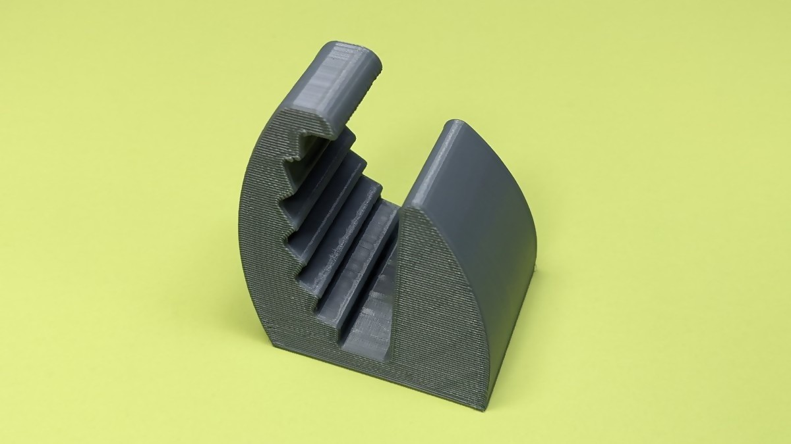
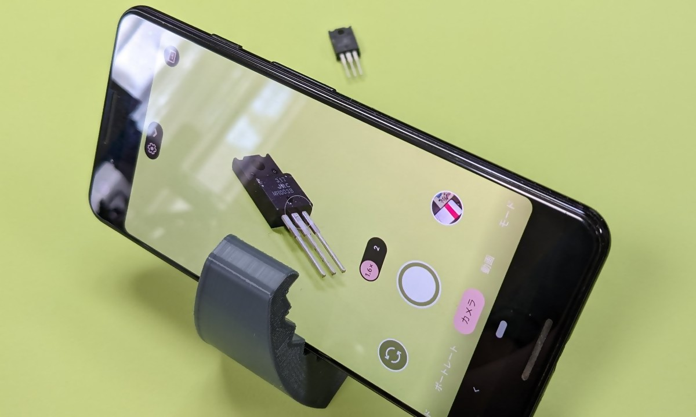
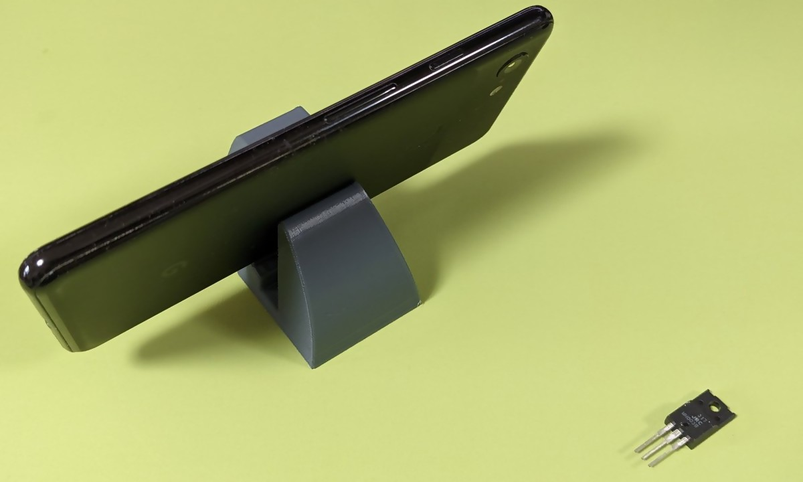
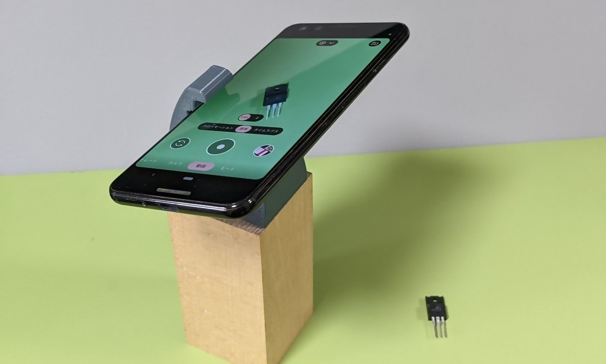
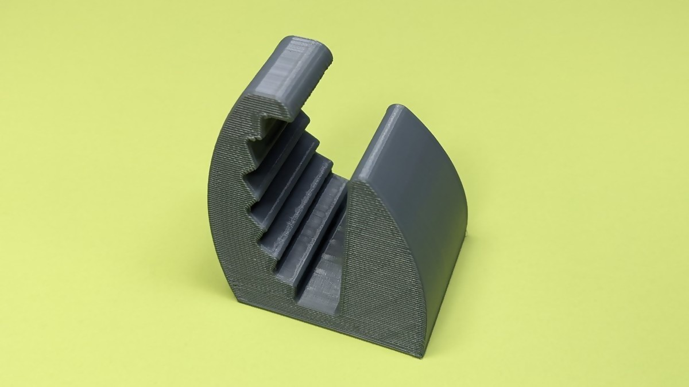
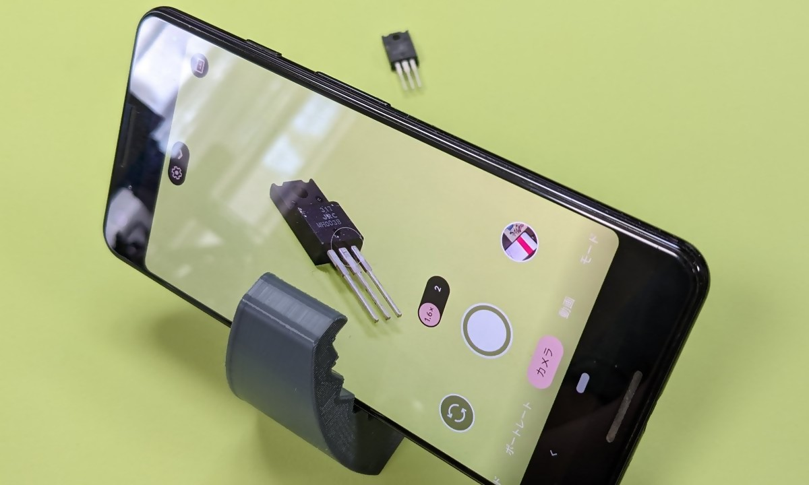
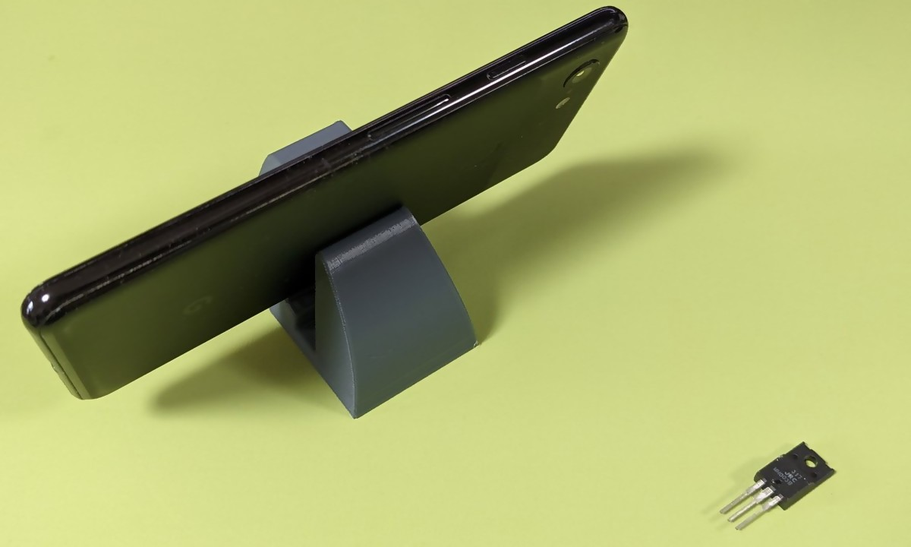
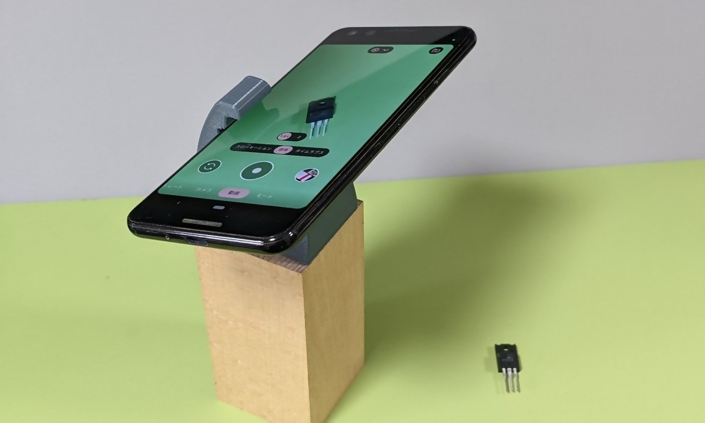

作業自撮り用スマホスタンド
2022/07/02 |
記事のソース

「小物とか手元の作業とか撮りたいけど三脚出すほどでもねーな」っていう時にサクッと使えるスマホスタンドを作りました。
ダウンロード: Smartphone Stand for Picture by shapoco - Thingiverse




「小物とか手元の作業とか撮りたいけど三脚出すほどでもねーな」っていう時にサクッと使えるスマホスタンドを作りました。
ダウンロード: Smartphone Stand for Picture by shapoco - Thingiverse


